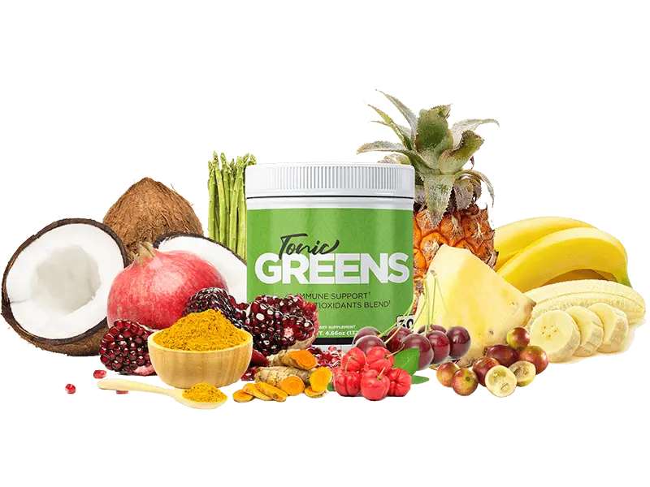

TonicGreens™ | Official Website
TonicGreens™ is a revolutionary 6-in-1 formula designed to combat the virus that causes herpes at its roots. Powered by a potent antioxidant, this unique blend not only targets the virus but also boosts both internal and external immunity, providing comprehensive disease protection.
Packed with powerful extracts, TonicGreens™ strengthens the immune system, enhancing the body’s ability to fight off infections. Additionally, this nutrient-rich smoothie promotes a healthy digestive system, improving nutrient absorption for maximum health benefits. Experience the transformative power of TonicGreens™ and support your overall wellness while fighting viral threats.